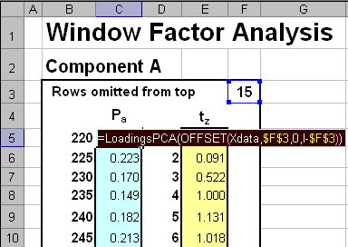

Chemometrics in Excel – Interactive
Educational Programme
Monday, 25 June 2012, Budapest,
conference CAC-2012
Contact person: Oxana Rodionova
(rcs@chph.ras.ru)

|
|
Chemometrics in Excel – Interactive
Educational Programme Monday, 25 June 2012, Budapest,
conference CAC-2012
|
|
Course Description
The aim of the courses is to provide the participants with a powerful and easy accessible tool for basic multivariate data analysis (MDA). Now MDA is the essential part of complex analytical experiments and chemometrics is intensively used for processing of the various chemical data. Chemometrics uses a very large variety of softwares, special chemometric and general mathematical packages, or various computer environments. As a result, to make first steps for a student or analyst it is necessary to obtain a special software and to acquaint with it. We have design the basic projection methods as worksheet functions in Excel and called it Chemometrics Add-In. This software provides:
Examples of the web-tutorials and supplementary Excel-files will be analyzed during the course. These materials may be used as a framework for a distance e-learning course in chemometrics.
Chemometrics Add-In is a specially designed software for Microsoft Excel. The package consists of two files Chemometrics.dll and Chemometrics.xla. The main projection functions can be applied as ordinary user-defined functions in Excel. The core functions for the PCA/PLS decompositions are designed to ensure very fast calculations even for the rather large data sets (200 samples by 4500 variables). They are programmed in C++ language and linked to Excel via DLL. Such an approach also provides possibilities for building classification and calibration models.
Full individual license for Chemometrics Add-In software will be provided for all registered attendees.
Audience and Language
The persons
involved in teaching of chemometrics. A basic knowledge of chemometric concepts
and methods, e.g., PCA and PLS is desirable
The course language
is English.
Participants are encouraged to use their own laptops with Excel 2007 and
Chemometrics Add-In installed.
Registration
Register via the conference web site.
Instructors
DSc.
Oxana Rodionova (ICP RAS,
Moscow)
DSc Alexey Pomerantsev (ICP
RAS, Moscow)
Course Outline
The course consists of two blocks: part 1 – Introduction, and part 2 - Advanced
Part 1, Introduction deals with:
Part 2 Advanced deals with:
Detailed
description of Chemometrics-Add-In and computer exercise on its application
will be conducted during this course
Suggested Reading
Additional course materials
will be provided for the participants before May 1, 2012
Last modification: 28.05.13